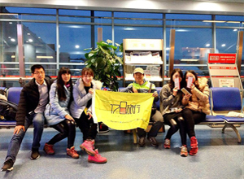
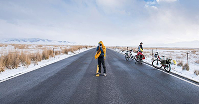
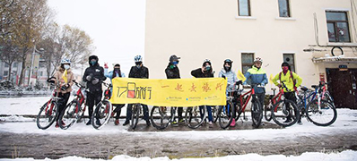
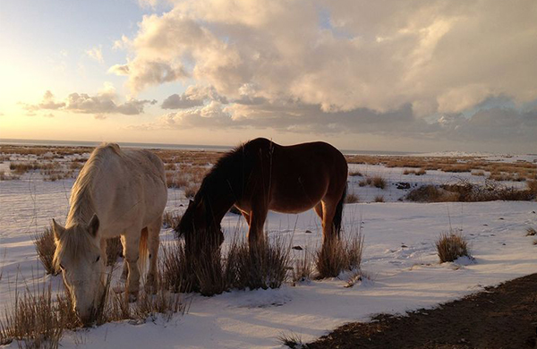
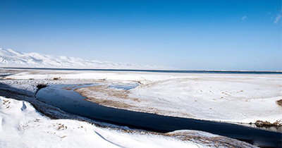
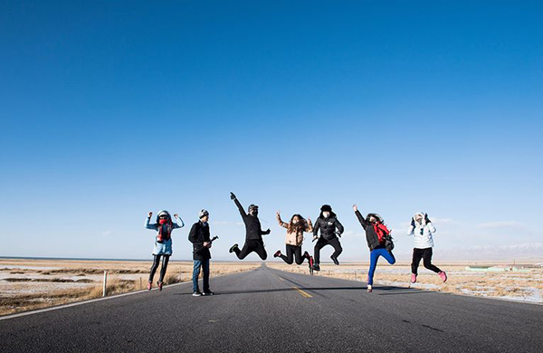
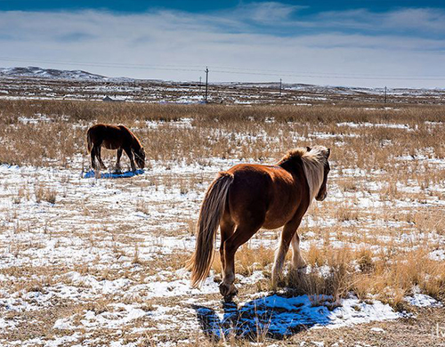

时间：2016.10.26
时间：2016.10.26
 天数：3天
天数：3天
 人均：500-1000（元）
人均：500-1000（元）
 青海湖
青海湖
环青海湖
出发就现在，热爱从未改变
D1 / 风雪骑士
西安市区 -西安咸阳机场 -西宁曹家堡机场 -海晏 -西海镇 -金沙湾 -湖东种羊场
D2 / 逆风而上
湖东种羊场 -湖东洱海 -错果 -湖东路口 -京拉线 -青海湖渔场 -青海湖藏族民俗博物馆 -二郎剑景区 -江西沟
D3 / 心之所向
湖东路口 -环湖东路 -湖东洱海 -湖东种羊场 -金沙湾 -西海镇

D第一天
路线
西安市区→（出租车）→西稍门空港大酒店→（机场大巴5:30第一班）→西安咸阳机场→（飞机）→西宁曹家堡机场→（提前联系好的包车）→西海镇→（骑单车）→湖东种羊场
景点说明
西海镇——青海省海北藏族自治州州府新址——西海镇设在海晏县境内，位于湟水源头、海晏盆地的金银滩草原，原系中国第一个核武器研制基地，这块鲜为人知的神秘禁区， 孕育了新中国第一颗原子弹、氢弹，为打破国际敌对势力的核讹诈，振军威，扬国威作出了不朽的功绩。



D第二天
路线
湖东种羊场→（骑单车）→湖东洱海→（骑单车）→湖东路口→（骑单车）→青海湖渔场→（骑单车）→青海湖二郎剑景区


景点说明
二郎剑——二郎剑又名为“海带”，藏族人称之为“海虎”。位于青海湖东南岸，为一狭长的陆地提带，宽约百步，长约25公里，自南向北没入海中，开头酷似一把长剑。古籍上曾有这样的记载：“南岸一堤，阔仅百步，北亘数十里，直奔海腹而没，名为海带”。
D第三天
路线
湖东路口→（骑单车）→环湖东路→（骑单车）→湖东洱海→（骑单车）→湖东种羊场→（骑单车）→金沙湾→（骑单车）→西海镇
景点说明
湖东洱海——<湖东洱海旅游风景区> 洱海位于青海湖环湖东路6公里处。湖旁的洱海帐篷度假村已成规模，在这里可体验藏族家访，藏式婚礼、民族歌舞、水上娱乐、沙漠运动、骑马拍照，观日出、日落，草原篝火晚会等娱乐活动。


选择用户头像：


评论内容为200字以内……
呀，呼伦贝尔，早上起来第一件事就是，再！去！一！次！敖！鲁！古！雅！实在是太喜欢这里了，充满着森林感的民族特色，还有神秘而温顺的鹿鹿。